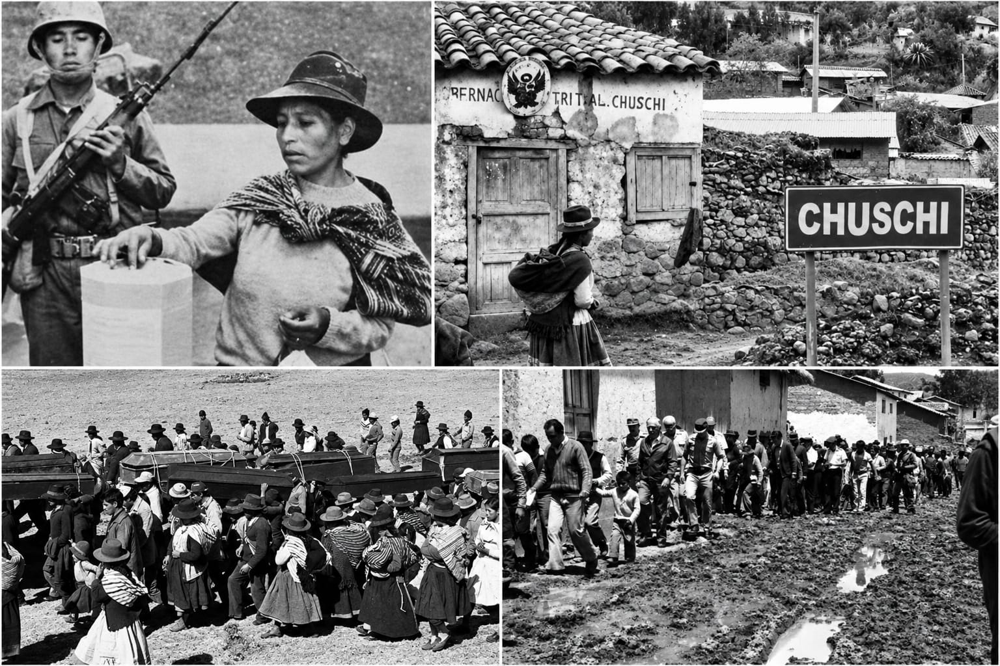
Atentado de Chuschi
Quema de ánforas y cédulas electorales por parte de Sendero Luminoso. Marcó el inicio del accionar terrorista en el Perú.
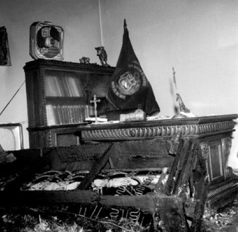
Incendio de la Municipalidad de SMP
El 13 de junio se da la primera acción de envergadura en Lima. De esta forma, los terroristas de Sendero Luminoso anunciaron la guerra en Lima. Los ejecutores fueron una facción senderista denominada “Movimiento de Obreros y Trabajadores Clasistas” (MOTC); ellos lanzaron bombas molotov contra las instalaciones de la Municipalidad de San Martín de Porres. El incendio del municipio provocó destrucción de mobiliario y documentación. En los volantes que dejaron anunciaban el “inicio de la lucha armada”.
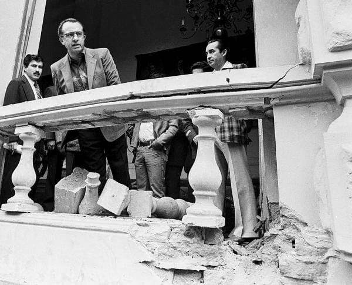
Atentado con explosivos al Congreso de la República
Un atentado con explosivos causó daños de consideración en uno de los balcones del Congreso de la República. El suceso desató un debate nacional sobre la urgencia de dotar a las fuerzas del orden de capacidad logística ante la creciente amenaza terrorista.
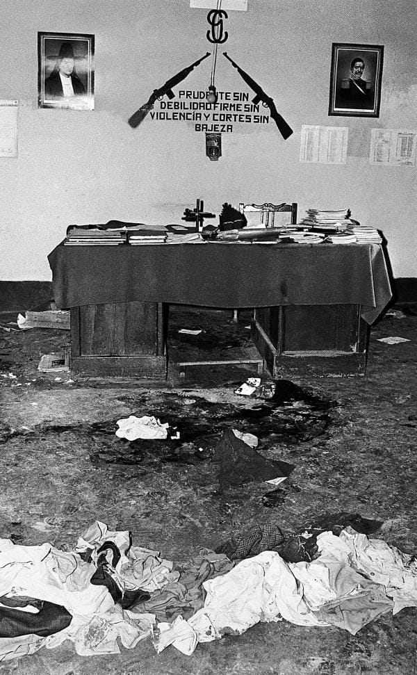
Ataque al puesto policial de Tambo
Militantes de Sendero Luminoso perpetraron un violento asalto armado contra el puesto policial de Tambo. En la defensa fallecieron un valeroso guardia civil y dos civiles, motivando la declaración de estado de emergencia en cinco provincias de Ayacucho.
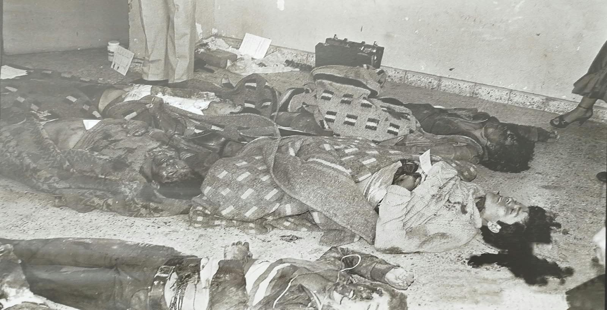
Asalto al penal de Huamanga
El 2 de marzo de 1982, un comando del grupo terrorista Sendero Luminoso realizó un violento asalto al penal de Huamanga (Ayacucho) para liberar a sus militantes presos, marcando un hito en la escalada de la violencia en el Perú.
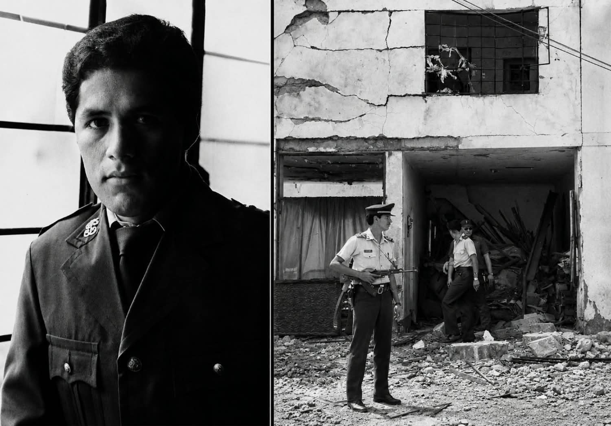
Ataque al puesto policial de Ñaña
Asalto nocturno de Sendero Luminoso para apoderarse de armas y municiones. Murieron los guardias Luis Muñoz y Luis Navarrete; la valerosa defensa evitó la toma del puesto.
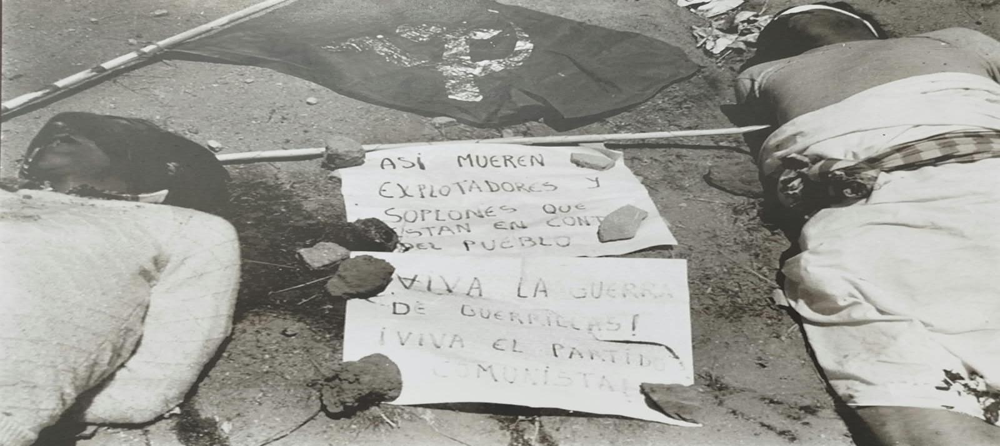
Asesinato de ganaderos en Ayacucho
El 9 de septiembre de 1982, la organización terrorista Sendero Luminoso perpetró el asesinato selectivo del ganadero ayacuchano Fortunato Nieto y su hermano Filomeno Nieto en el departamento de Ayacucho. Este crimen forma parte de la política de violencia extrema e imposición de "justicia popular" que el grupo terrorista aplicaba durante los primeros años del conflicto armado interno en el Perú.
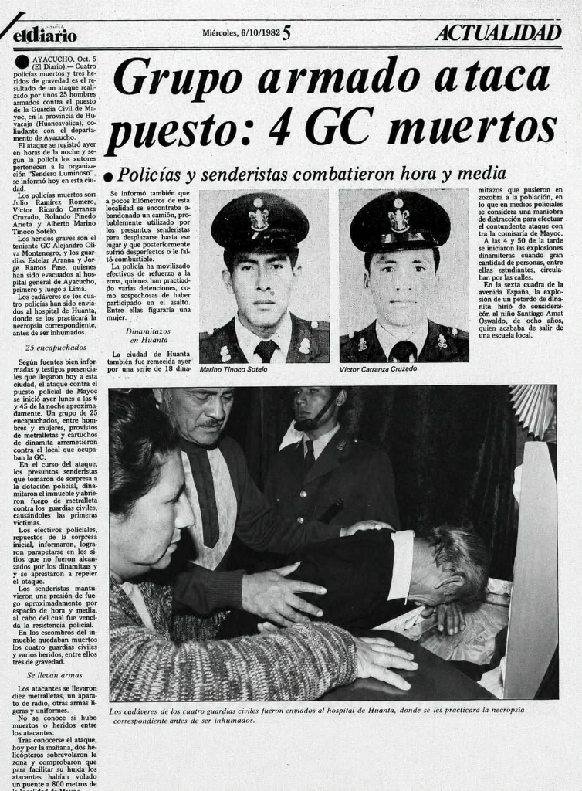
Ataque al puesto de Mayocc
Enfrentamiento armado entre Sendero Luminoso y la Guardia Civil en Mayocc con 4 policías muertos y 3 heridos. En Huanta perpetraron 18 atentados con dinamita como distracción.
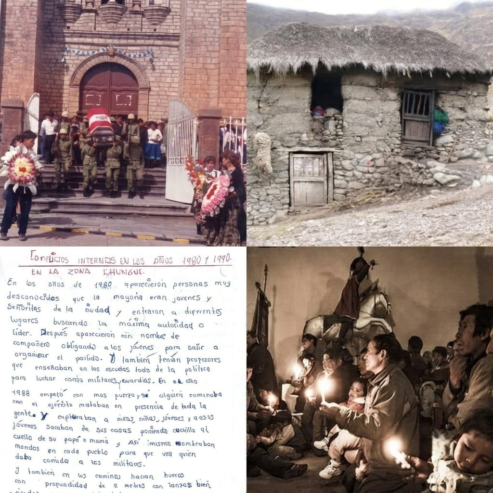
Violencia en Chungui y Oreja de Perro
Campaña sistemática de terror senderista contra comunidades rurales: asesinatos masivos, secuestros, desapariciones, saqueo y desplazamiento forzado de campesinos.
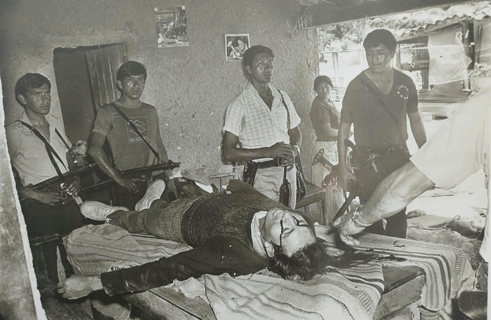
Asesinato del teniente alcalde de Huamanga
El 2 de febrero de 1983 ocurrió el asesinato del teniente alcalde de Huamanga en el distrito de Quinua, Ayacucho, acciones realizadas por SL como parte de su “Guerra Popular”.
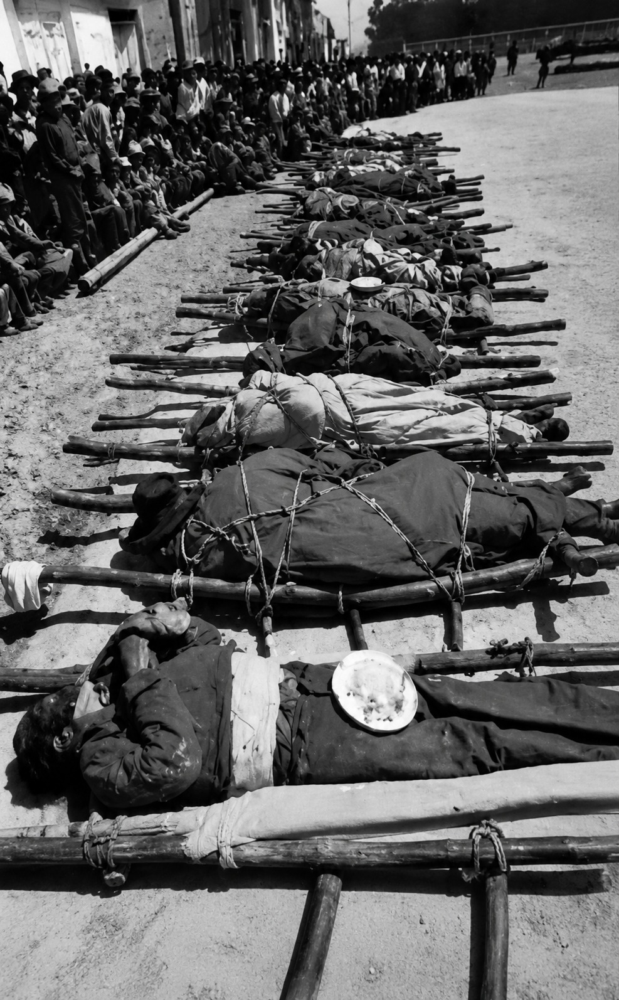
Masacre de Lucanamarca
Asesinato de 69 comuneros con hachas, machetes y armas de fuego por orden directa de Abimael Guzmán.
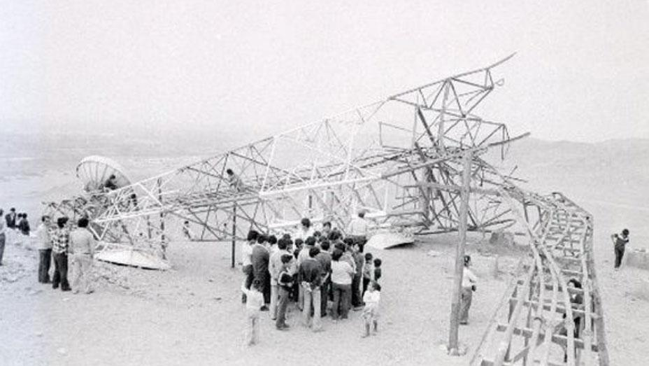
Derribo de torres de alta tensión en Lima
Durante el año de 1983 SL derribo 65 torres de alta tensión eléctrica, provocando interrupciones del servicio y afectando las actividades económicas y sociales. Asimismo, se perpetraron 33 atentados selectivos, que ocasionaron 37 víctimas, dirigidos contra personas consideradas por la organización terrorista como objetivos de su denominada “guerra popular”.
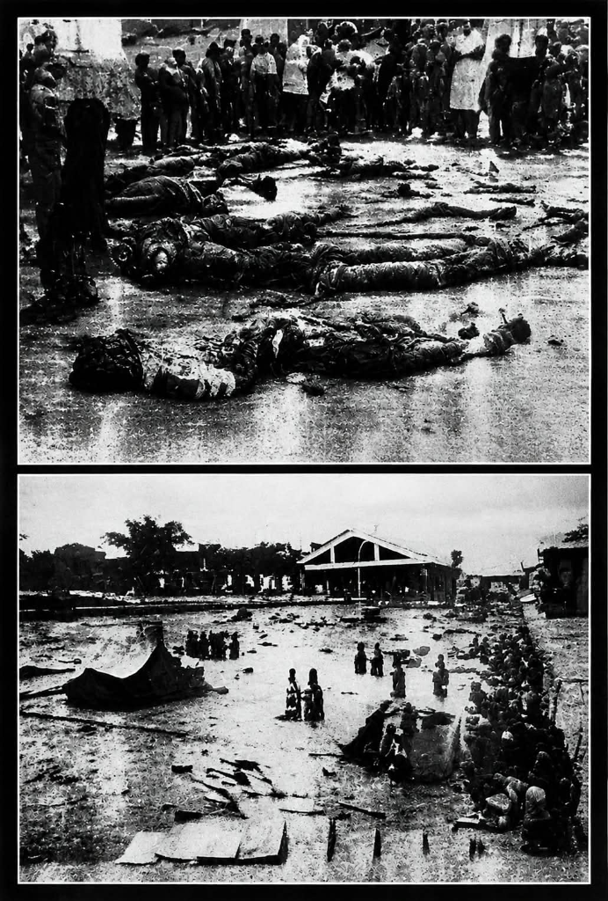
Incursiones en Aucayacu
Incursiones armadas contra el puesto policial y campaña de violencia en el Alto Huallaga con asesinatos selectivos de autoridades y comuneros opuestos a la organización.
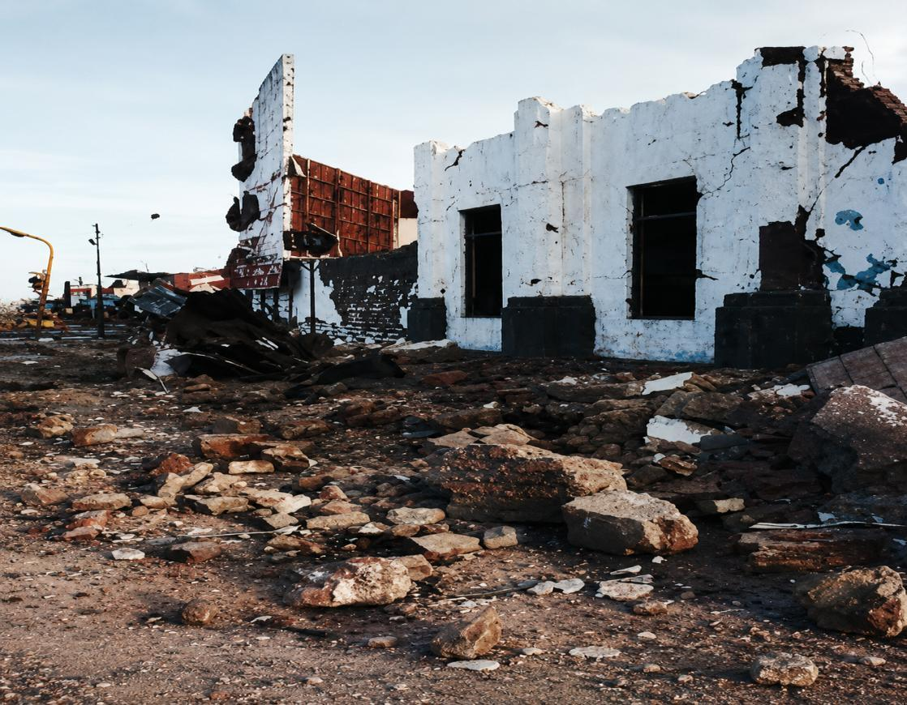
Ataque al puesto policial de Villa El Salvador por el MRTA
La noche del 22 de enero de 1984, un comando armado del MRTA dinamitó y atacó la comisaría de Villa El Salvador. Constituyó la primera acción armada pública reivindicada abiertamente por la organización terrorista.
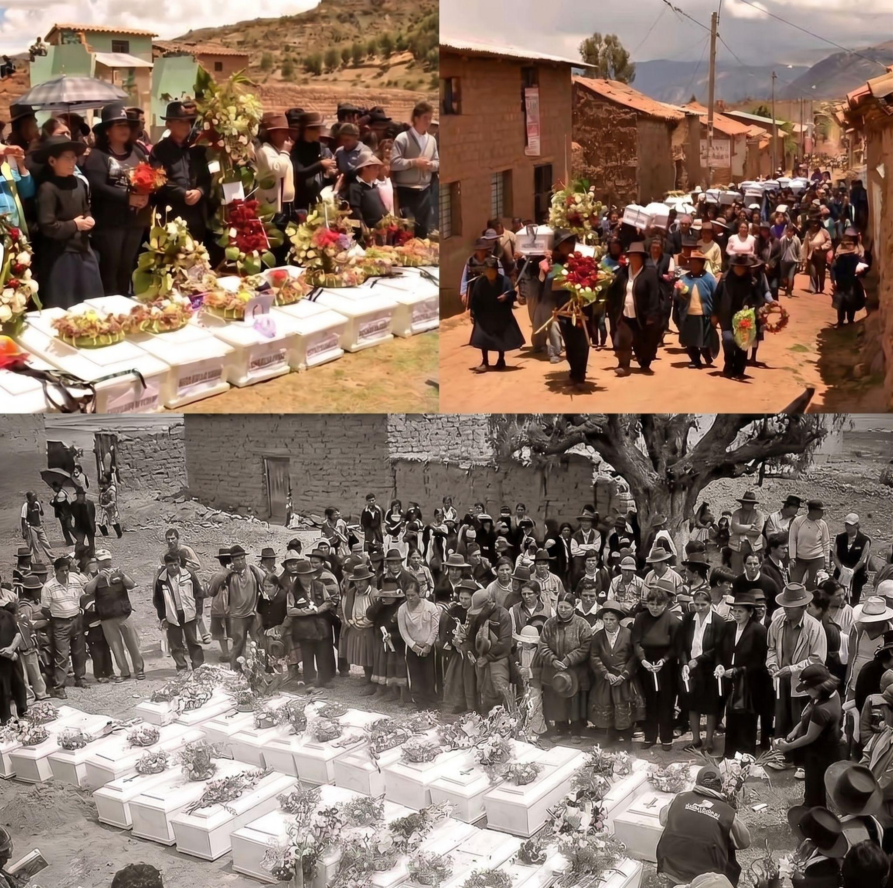
Masacre de Soras
Una sanguinaria columna de Sendero Luminoso interceptó un convoy de autobuses ('el expreso de la muerte') entre Soras y Ayacucho. Asesinaron cruelmente a 117 campesinos, incluyendo mujeres, ancianos y niños, como represalia por defender sus comunidades.
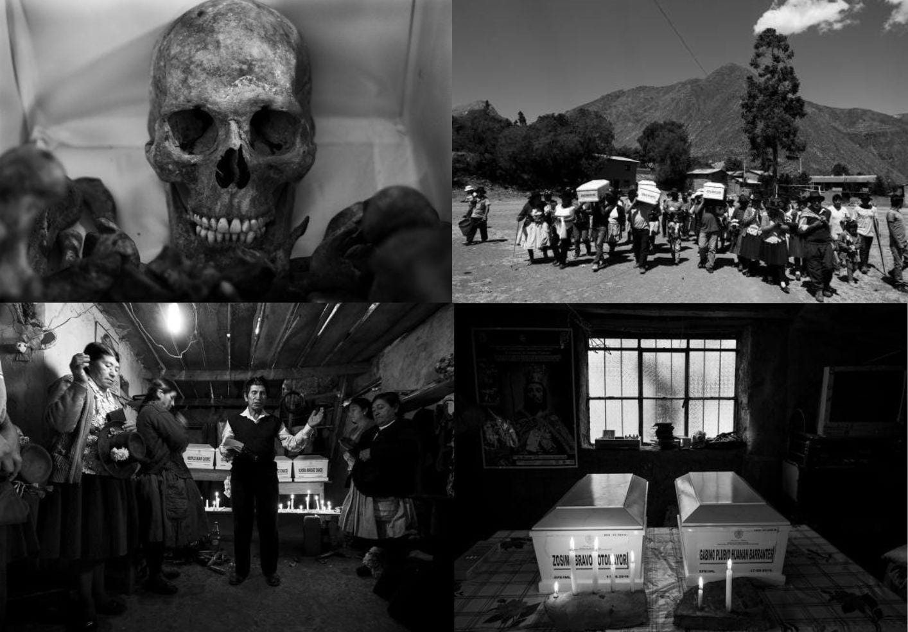
Masacre en la comunidad de Uchu
En agosto de 2016, luego de 32 años, se hizo la entrega de los restos de las víctimas de la masacre en la comunidad de Nazaret de Uchu (Ayacucho). En 1984, la masacre se dio en la comunidad de Uchu, hoy renombrada Nazaret de Uchu (en la provincia de Víctor Fajardo - Ayacucho), cuando una columna de Sendero Luminoso asesinó a un grupo de pobladores por negarse a ser parte del mencionado grupo terrorista. Este ataque se perpetró en los días cercanos a la festividad de la Virgen de la Asunción.
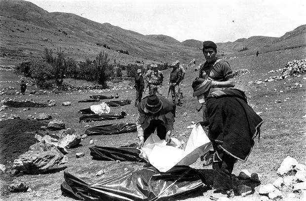
Ataque en la localidad de Pampacancha
27 de agosto de 1984, un grupo de miembros de Sendero Luminoso llegó a la localidad de Pampacancha, en la provincia de Huanta. Los atacantes reunieron a pobladores de varias familias en un local comunal y posteriormente asesinaron a numerosas personas. Las fuentes históricas señalan que alrededor de 40 pobladores murieron y 15 resultaron heridos.
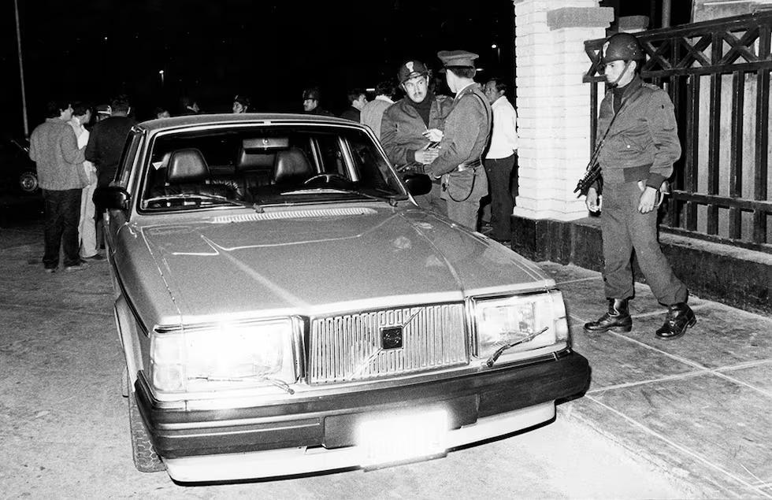
Secuestro del empresario José Onrubia Romero
El MRTA inició formalmente su práctica sistemática de secuestros extorsivos en el Perú emboscando el vehículo blindado del empresario en San Isidro, marcando su giro hacia la delincuencia financiera para financiar su armamento.
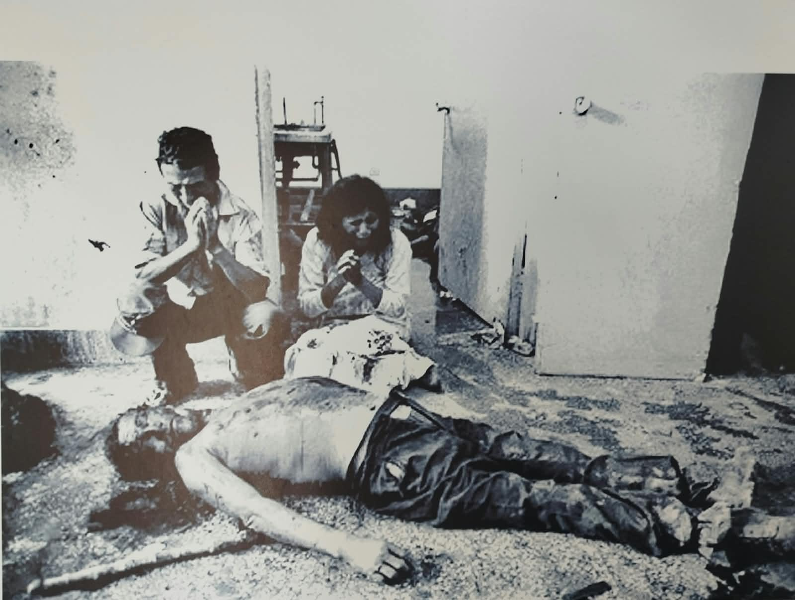
Incursión de SL en Tingo María
Solo dos días después de la fecha consultada, miembros de Sendero Luminoso incursionaron violentamente en el caserío de Topa, en Tingo María. En este ataque asesinaron brutalmente a machetazos a una madre de familia y a sus dos hijos en sus viviendas, en uno de los episodios de aniquilamiento de población civil más recordados de la provincia durante ese verano.
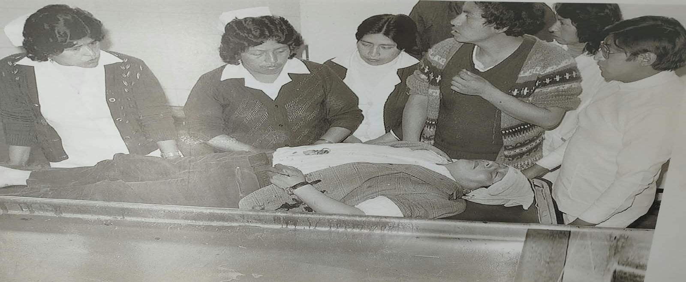
Asesinato del alcalde de Yanacancha
El alcalde asesinado el 8 de mayo de 1985 fue Luis Aguilar Cajahuamán, burgomaestre de Yanacancha (distrito de la provincia de Pasco), un comando armado de la organización terrorista Sendero Luminoso acribilló. SL centraba sus ataques en autoridades locales de la sierra central para forzar sus renuncias, quebrar el orden democrático y generar un vacío de poder.
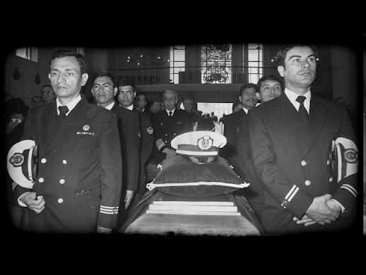
Atentado en La Curva del Diablo
Miembros de Sendero Luminoso atacaron a personal naval que se disponía a abordar buses hacia la Base Naval del Callao. En la emboscada fallecieron tres valerosos marinos.
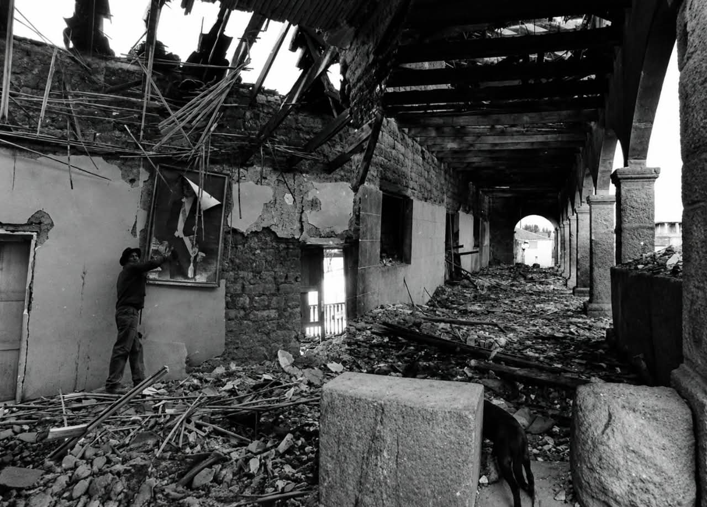
Ataque a Vilcashuamán
Destrucción con dinamita del puesto de la Guardia Civil y la sede municipal, resultando en 6 policías y varios civiles muertos.
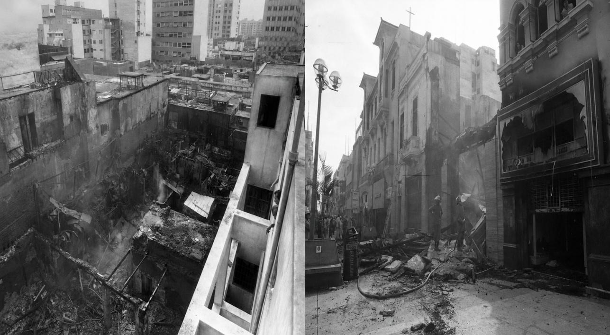
Atentado en Centro comercial en Lima
El 4 de febrero SL realiza un atentado incendiario contra la tienda Maruy, en el Centro de Lima. Los empleados que no quedaron heridos intentaron por todos los medios de salvar de las llamas la mercadería de su centro de trabajo. El atentado terrorista causó hondo pesar entre los limeños, pero también causó solidaridad con la empresa afectada.
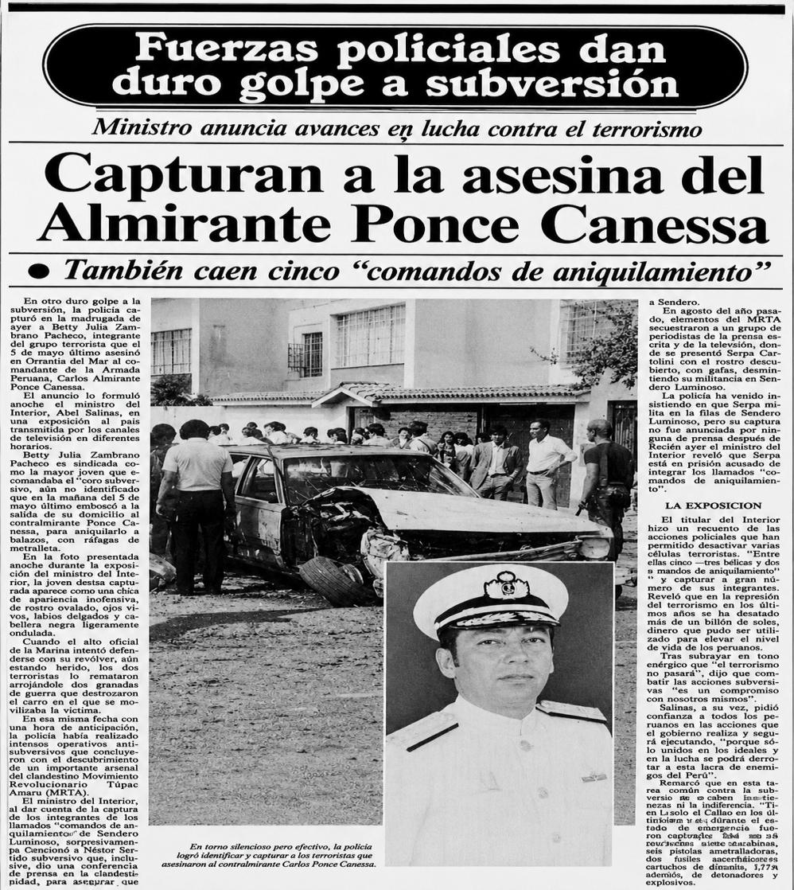
Asesinato del contralmirante Carlos Ponce Canessa
Un comando de aniquilamiento de Sendero Luminoso acribilló en San Isidro al contralmirante AP Carlos Ponce Canessa, miembro del Estado Mayor de la Marina de Guerra del Perú, cuando se desplazaba en su vehículo sin escolta.
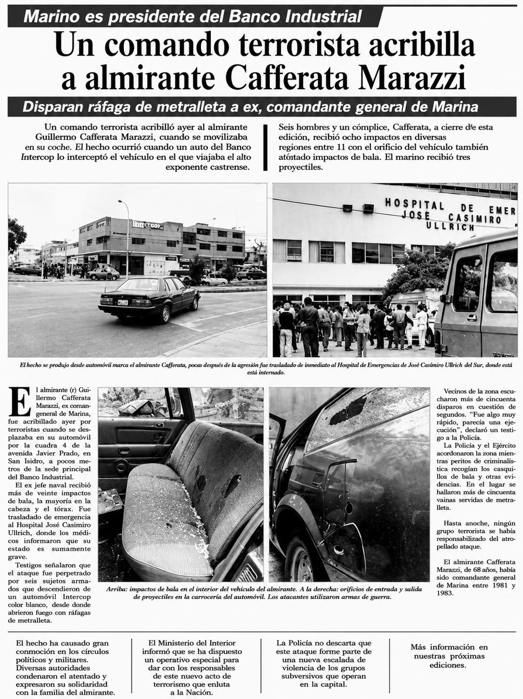
Atentado contra el vicealmirante Gerónimo Cafferata
Atentado senderista en Lima contra el vicealmirante AP (r) Gerónimo Cafferata Marazzi, ex comandante general de la Marina de Guerra y presidente del Banco Industrial. Trasladado de urgencia a EE.UU., falleció a causa de las graves heridas el 18 de octubre.
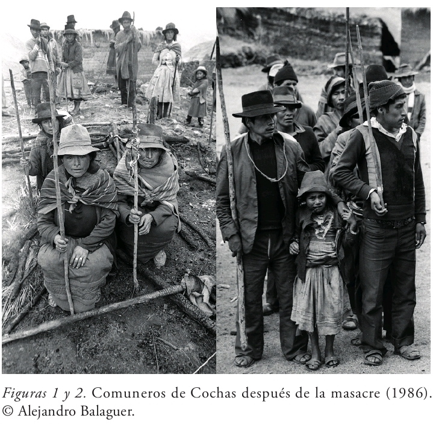
Masacre de Cochas
Ocurrió el 17 de febrero de 1987 en la comunidad de Cochas, Ayacucho. Una columna armada de Sendero Luminoso asaltó la localidad violentamente, obligando a los pobladores a concentrarse en la plaza principal y abriendo fuego indiscriminado contra la multitud, dejando un saldo de 30 pobladores muertos como represalia por resistirse a la ideología senderista y defender su territorio.
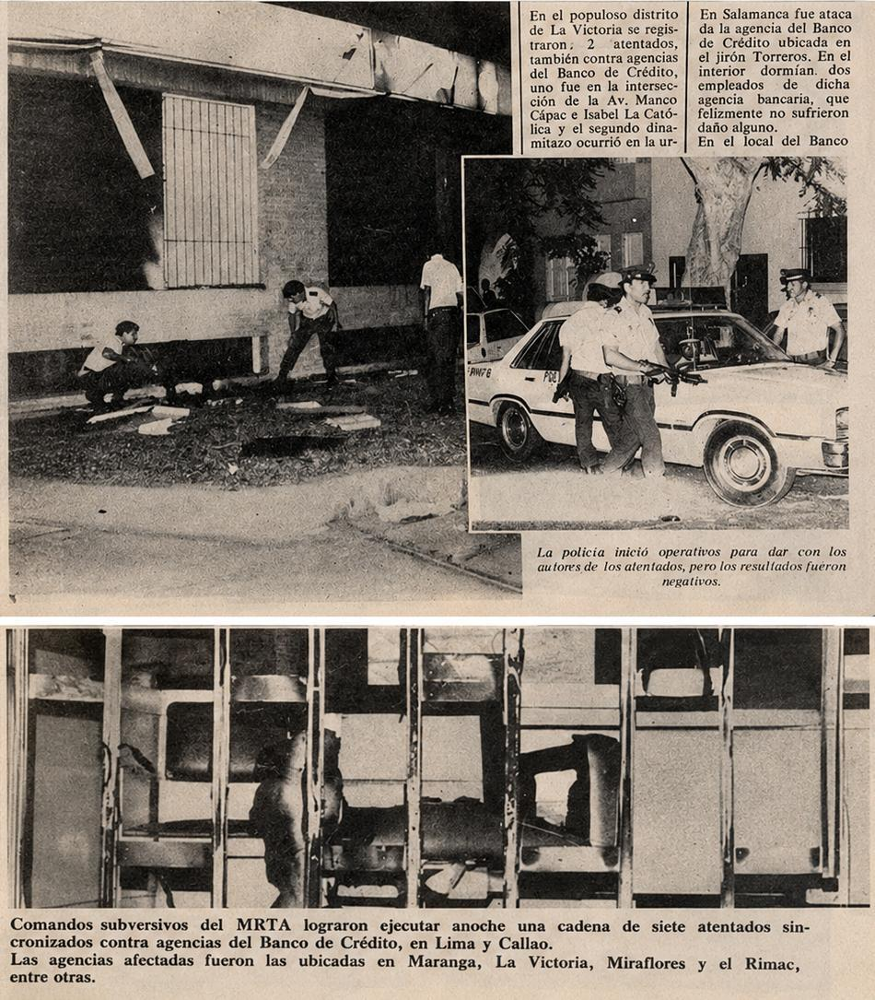
Terroristas del MRTA dinamitaron 15 agencias de Bco. Crédito
Elementos subversivos del MRTA atacaron de manera sincronizada agencias del Banco de Crédito en 10 distritos de la capital con dinamita y cócteles molotov, dejando 10 personas heridas y cuantiosos destrozos materiales.
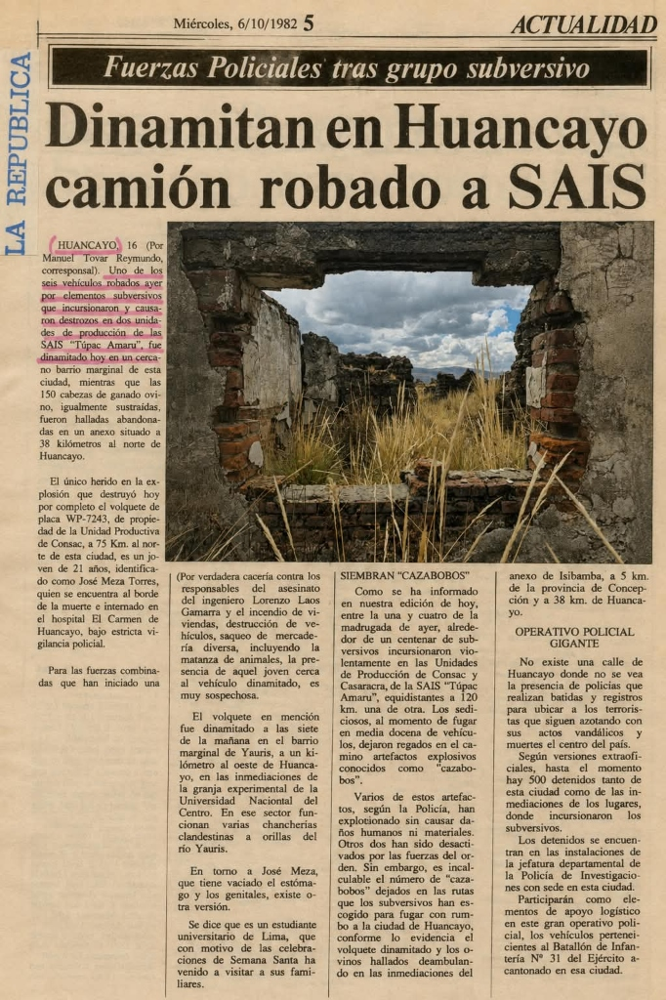
Ataques a SAIS Cahuide y Pachacútec
Ataques sistemáticos contra cooperativas agrarias SAIS Cahuide y Pachacútec; asesinato del administrador, destrucción de maquinaria, saqueo e incendio de instalaciones.
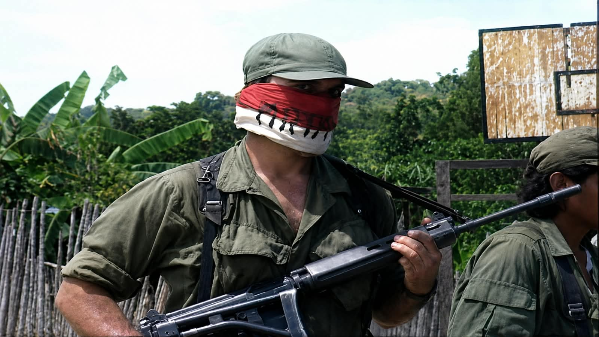
Ataque del MRTA a Soritor
Columna del MRTA tomó por asalto Soritor, atacó dependencias policiales y municipales, realizando una concentración armada forzada para difusión de su propaganda.
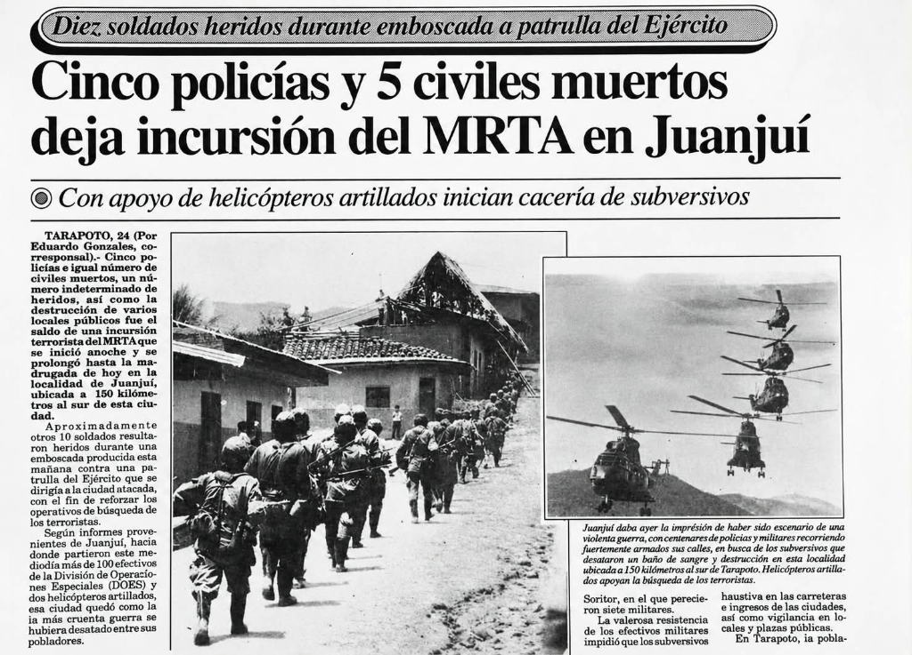
Incursión del MRTA en Juanjuí
Incursión armada contra instalaciones públicas y policiales de Juanjuí, cobrando la vida de un policía. Se registraron incursiones paralelas en Campanilla, Tabalosos y Sisa.
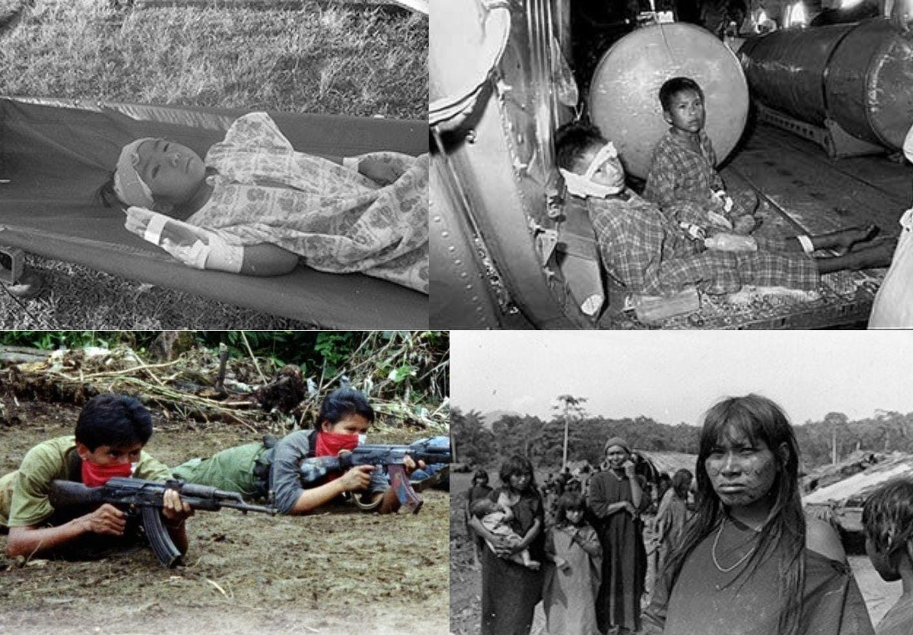
Ataque a Puerto Ocopa
Integrantes de Sendero Luminoso ingresaron a la comunidad nativa de Puerto Ocopa, saquearon establecimientos comerciales y asesinaron a un poblador.
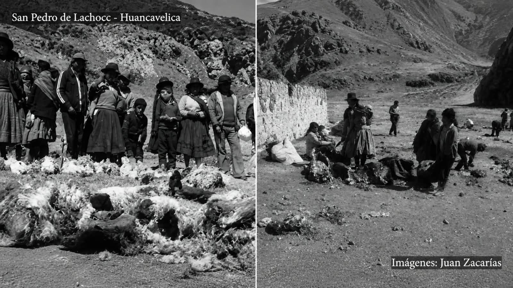
Ataque de Sendero en Lachocc
Ataque armado y emboscada senderista perpetrada contra civiles y transportistas que se desplazaban por la carretera de Lachocc.
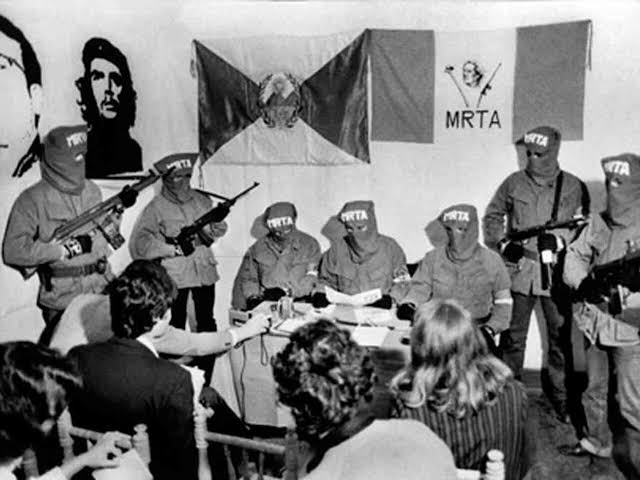
Ataque del MRTA en Pichanaki
Hostigamiento armado y ataque contra el puesto policial de Pichanaki dentro de una escalada terrorista del MRTA en la selva central.
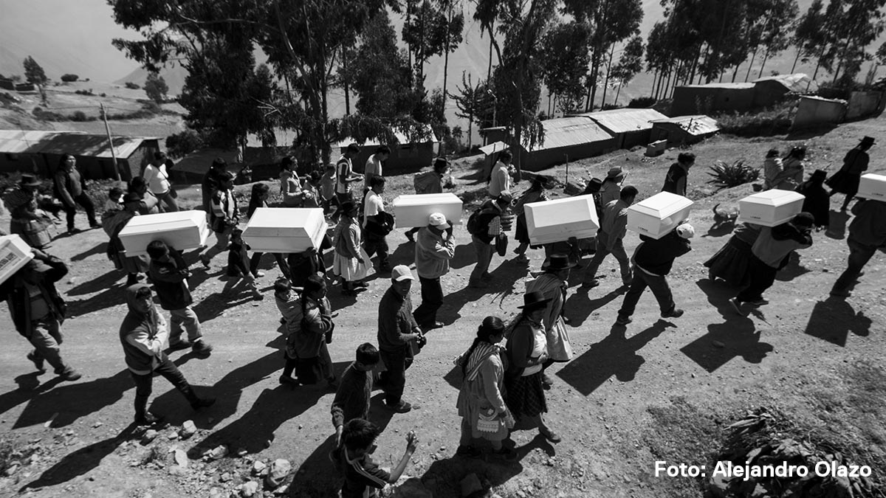
Masacre de Aranhuay
Ocurrió el 20 de abril de 1988 en la comunidad de Aranhuay, Ayacucho. Miembros de Sendero Luminoso ingresaron al pueblo disfrazados con uniformes militares. Mediante engaños, reunieron a la población en la plaza principal, formaron a los comuneros en filas y asesinaron a 27 campesinos. El ataque fue una represalia del grupo terrorista porque la comunidad se negaba a apoyarlos y había organizado comités de autodefensa.
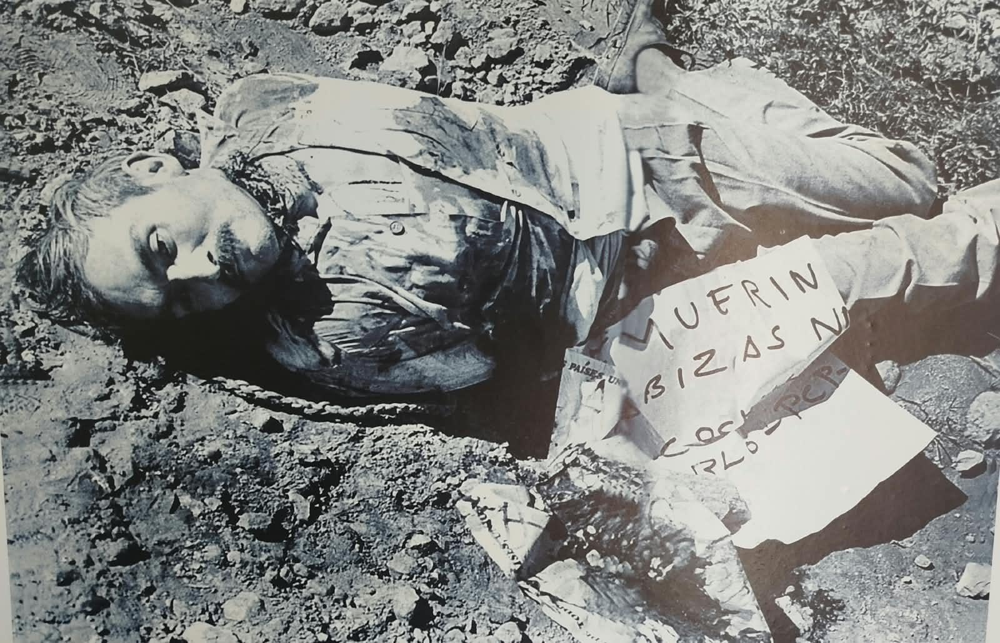
Asesinato del alcalde de Huanta
El 20 de abril de 1988, Sergio Canales, alcalde de Huanta y militante del Partido Aprista Peruano, fue secuestrado y asesinado por Sendero Luminoso. Ese mismo mes se registró una escalada terrorista que dejó al menos 28 víctimas, entre ellas autoridades de distritos de Arequipa, Huanta y Lima. Estos hechos desmintieron las declaraciones triunfalistas del entonces ministro del Interior, José Barsallo, evidenciando la persistencia y gravedad de la violencia terrorista.
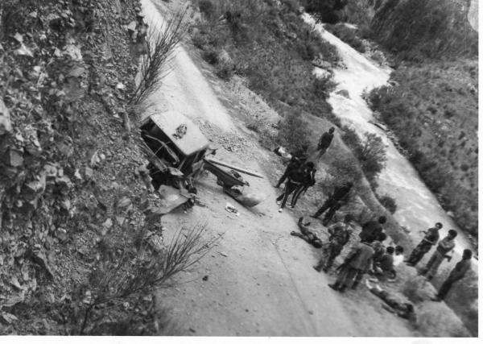
Ataques a comunidades de Pasco
Sendero Luminoso asesinó a autoridades y dirigentes comunales en su estrategia de aniquilamiento de liderazgos locales para imponer su dominio.
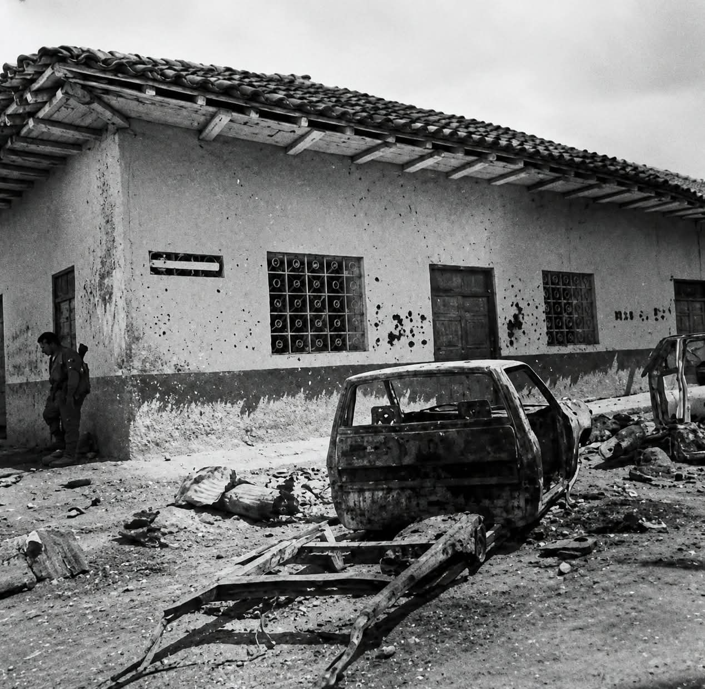
Ataque al puesto de Uchiza
Sitio y destrucción del puesto policial por una alianza entre Sendero Luminoso y narcotraficantes, dejando 10 policías muertos.
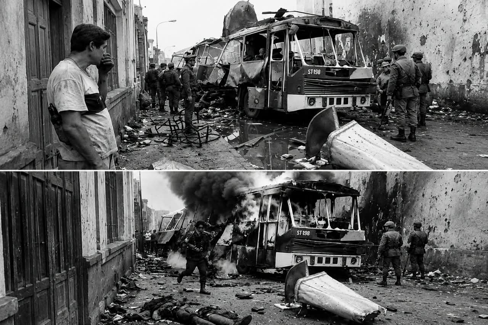
Atentado a los Húsares de Junín
Carga de dinamita destruyó el ómnibus del Regimiento Húsares de Junín rumbo al relevo en Palacio. Murieron 6 militares y 25 quedaron heridos de gravedad.
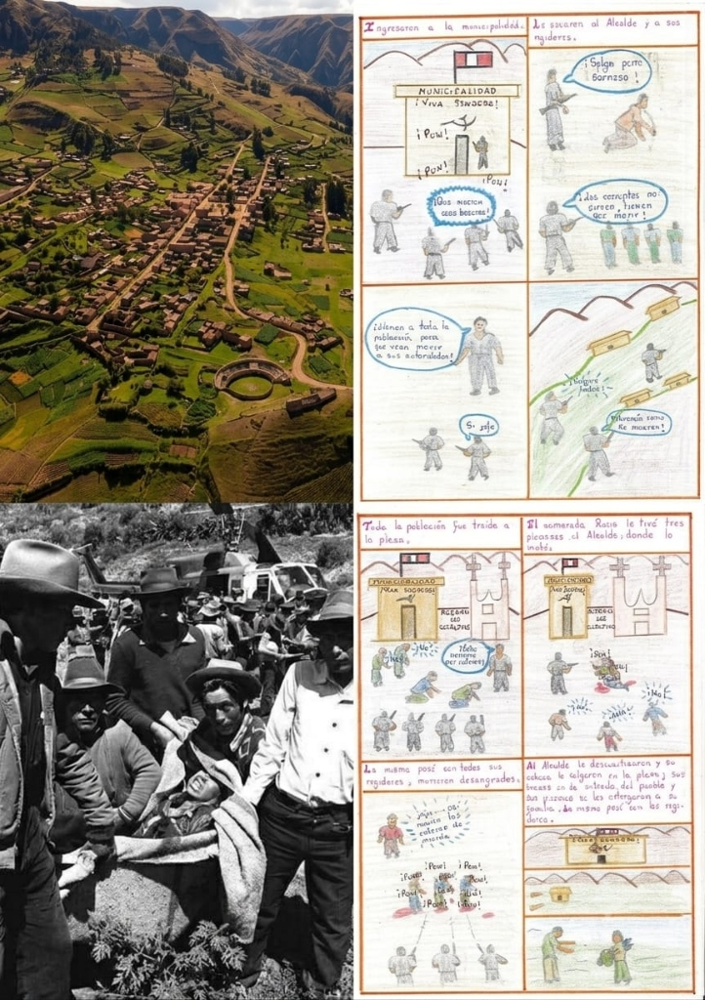
Asesinatos en Chongos Alto y Chicche
Sendero Luminoso intensificó asesinatos selectivos de autoridades comunales y alcaldes para destruir el orden legal e imponer su 'nuevo poder'.
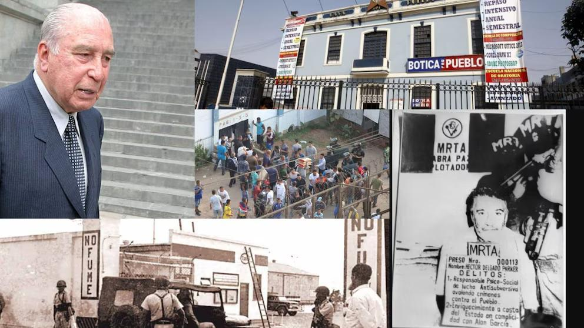
Secuestro de Héctor Delgado Parker por el MRTA
Importante empresario de Panamericana Televisión secuestrado por el MRTA, asesinando a su chofer y guardaespaldas. Permaneció 7 meses en cautiverio en una 'cárcel del pueblo' subterránea hasta su liberación en mayo de 1990.
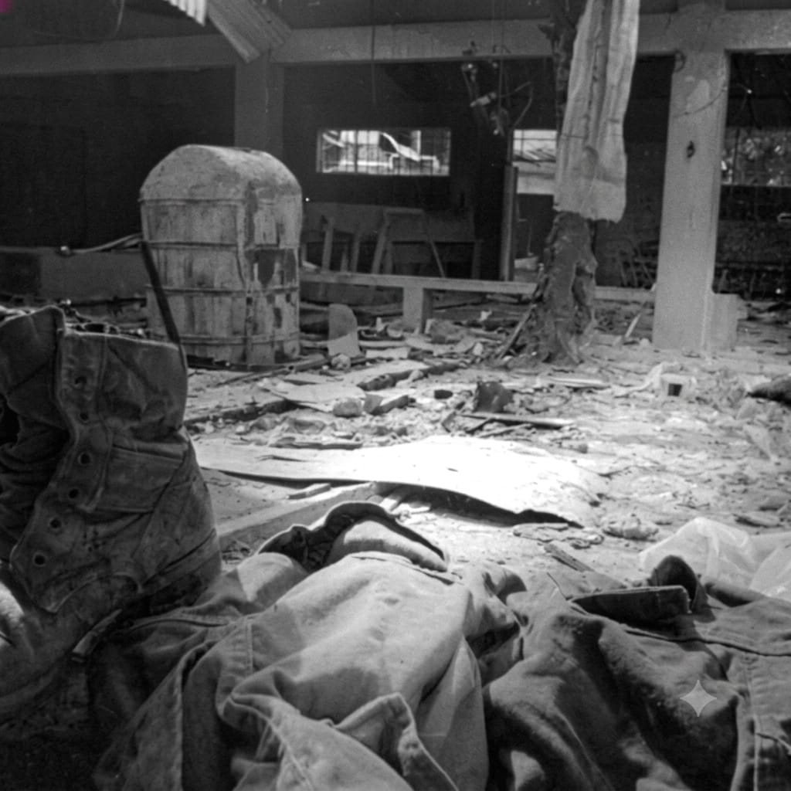
Ataque al puesto policial de Tulumayo
Ofensiva armada de Sendero Luminoso contra las fuerzas policiales en el eje del Alto Huallaga con el objetivo de aislar la región, debilitar la presencia del Estado y capturar armamento.
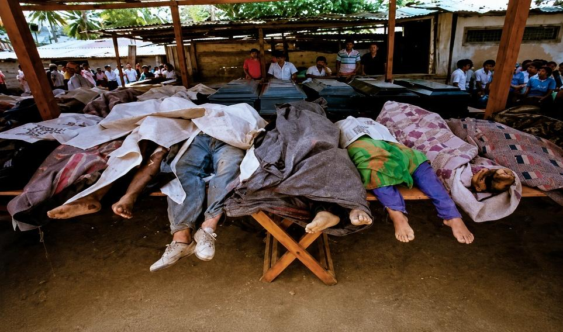
Masacre de Canayre
Terroristas de Sendero Luminoso irrumpieron violentamente en la comunidad selvática de Canayre y asesinaron con extrema saña a 39 pobladores, castigando su resistencia civil y su decisión de defender su comunidad.
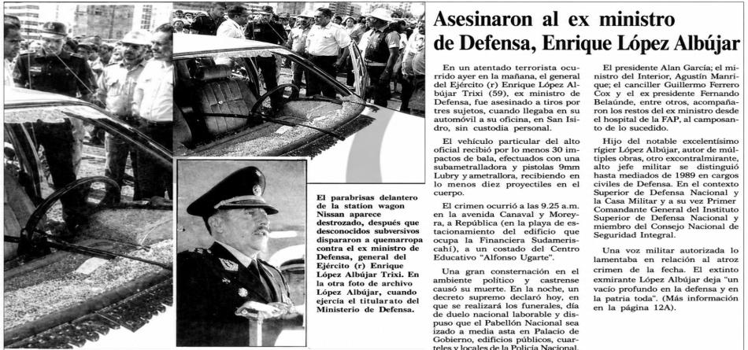
Asesinato del general EP Enrique López Albújar
Un comando del MRTA acribilló a balazos al general de división EP (r) Enrique López Albújar Trint, ex comandante general del Ejército y ex ministro de Defensa, en represalia por el combate de Los Molinos. Falleció en el Hospital Militar Central.
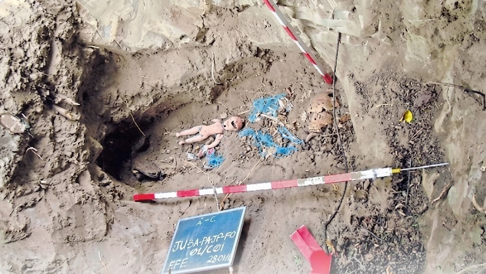
Ataques en la Selva Central
Campaña de asesinatos, secuestros forzados y desplazamiento de comunidades asháninkas y colonos en la selva central por columnas senderistas.
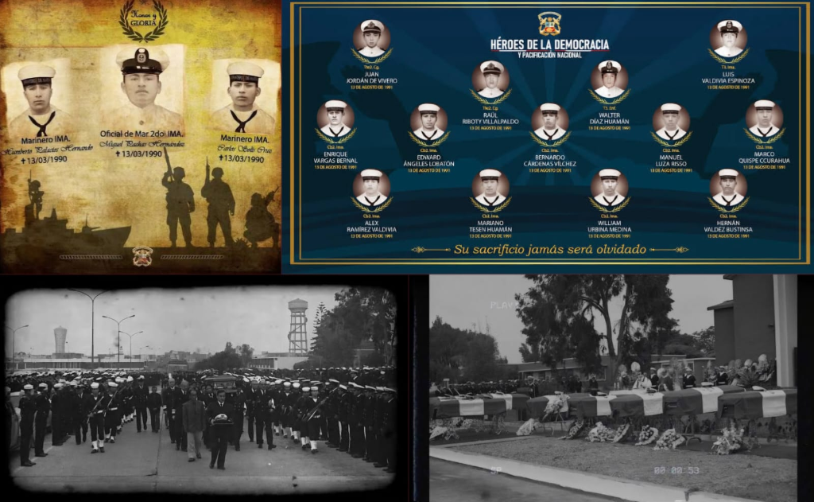
Ataques a bases y patrullas en la selva
Diversas bases contrasubversivas y patrullas de la Infantería de Marina sufrieron emboscadas en Nueva Italia, Santa Rosa de Pata y el eje del VRAEM, donde los efectivos repelieron los ataques y defendieron con valentía sus posiciones.
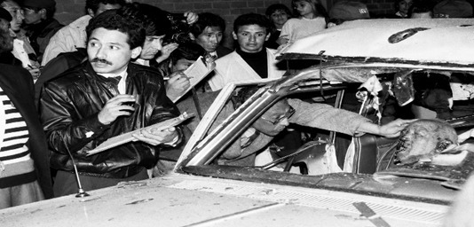
Asesinato del ex ministro Orestes Rodríguez
Sicarios senderistas asesinaron al doctor Orestes Rodríguez Campos, ex ministro de Trabajo y ex rector de la Universidad Nacional Federico Villarreal, detonando explosivos junto a su vehículo frente a su domicilio.
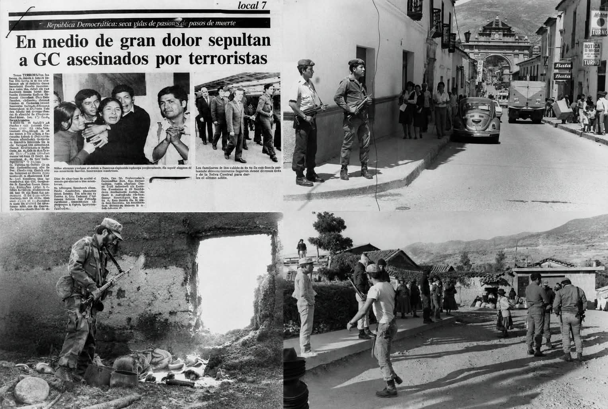
Emboscada Rancha–Huascahura
Sendero Luminoso emboscó una patrulla de la Policía Nacional en la carretera con explosivos y ráfagas de fusil, causando la muerte de 11 policías.
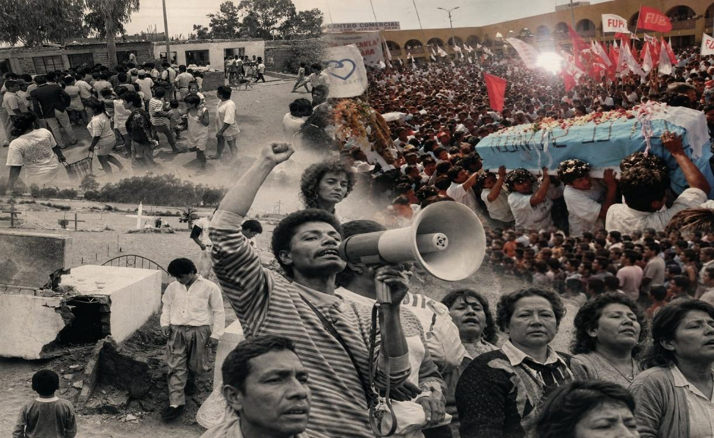
Asesinato de la dirigente María Elena Moyano Delgado
El 15 de febrero, la teniente alcaldesa de Villa el Salvador y dirigente popular, María Elena Moyano Delgado, fue asesinada por terroristas. Su policía de seguridad resultó gravemente herido, además de otras tres personas. La dirigente, de 36 años, había recibido constantes amenazas de muerte. Fue atacada cuando abandonaba un local donde se realizaba una actividad para el Programa del Vaso de Leche.
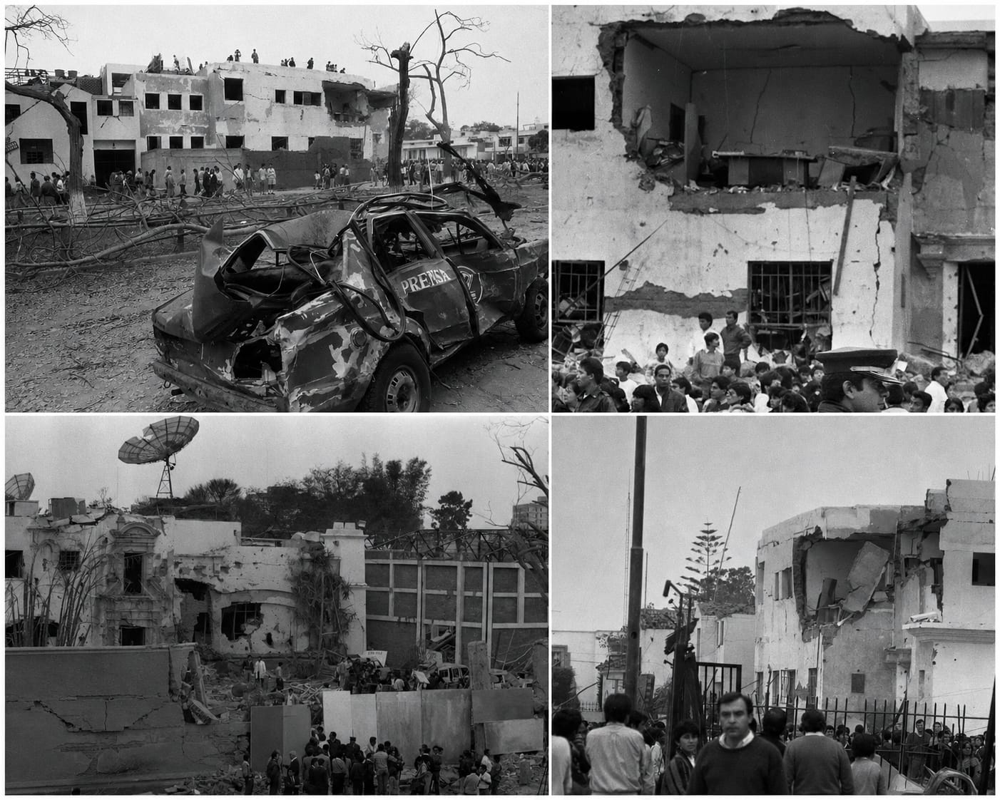
Coche bomba en Frecuencia Latina
Un camión bomba con media tonelada de explosivos detonó frente a la sede televisiva de Frecuencia Latina (Canal 2). Destruyó completamente las instalaciones del canal y causó la muerte de tres trabajadores, además de decenas de heridos.
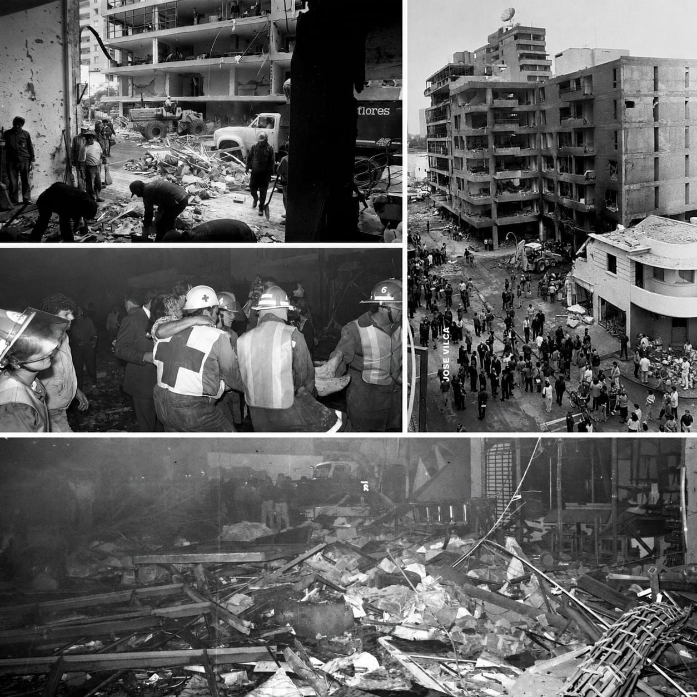
Atentado en la calle Tarata
Dos coches bomba con 500 kilos de dinamita y ANFO detonaron en la calle Tarata de Miraflores. Provocó la muerte de 25 personas, 155 heridos y destrucción masiva en un radio de 400 metros, convirtiéndose en el símbolo del terrorismo senderista en la capital.
Secuestro y asesinato del empresario David Ballón Vega
El empresario minero fue interceptado en su vehículo en Surquillo y secuestrado por el MRTA. Tras meses de encierro en una 'cárcel del pueblo' y al no recaudarse el rescate exigido, fue vilmente asesinado por sus captores.
Incursión del MRTA en Moyobamba
Incursión armada del MRTA en Moyobamba atacando dependencias policiales, locales públicos y el penal San Cristóbal para liberar presos e intimidar a la región.
Secuestro de Raúl Carlos Hiraoka Torres por el MRTA
Secuestrado en San Borja por un comando armado del MRTA. Hiraoka permaneció cautivo cerca de 100 días en una 'cárcel del pueblo' subterránea, sometido a tortura psicológica y severas condiciones inhumanas.
Masacre del Valle del Mazamari
Campaña de exterminio senderista contra la etnia asháninka organizada en comités de autodefensa. Fueron masacrados 72 indígenas.
Explosión de un coche bomba en la prefectura de Lima
A fines de 1993, los atentados mantenían al país en constante zozobra. La explosión de un coche bomba en la prefectura de Lima evidenció que aún se cumplían las órdenes de Abimael Guzmán antes de su captura, quien había dispuesto conmemorar el centenario del nacimiento de Mao Tse Tung, el 26 de diciembre de 1893.
Coche bomba en el hotel María Angola
Un coche bomba con aproximadamente 200 kilos de explosivos detonó frente al hotel María Angola de Miraflores a las 4:15 a.m., dejando cinco personas fallecidas y más de 50 heridos, además de severos daños en inmuebles y comercios aledaños.
Emboscada de Nuevo Bambamarca
Columnas de Sendero Luminoso bajo el mando del camarada 'Artemio' realizaron una emboscada armada contra una patrulla del Ejército en Nuevo Bambamarca.
Toma de la Embajada de Japón
Movimiento Revolucionario Túpac Amaru (MRTA) asaltó la residencia del embajador de Japón en Lima y mantuvo una crisis de rehenes durante 126 días.
Emboscada de Anapati
Las columnas de los hermanos Quispe Palomino emboscaron una patrulla militar, dejando 5 militares muertos.
Persistencia de remanentes terroristas
Tras la captura de Guzmán, remanentes armados continuaron operando en el Huallaga con 'Artemio' y en el VRAEM con los Quispe Palomino aliados al narcotráfico.
Atentado en el C.C. El Polo
Un coche bomba detonó a escasos metros de la embajada de Estados Unidos en el centro comercial El Polo. Perdió la vida el valeroso suboficial PNP Saúl Jesús Díaz Herrera y 9 ciudadanos más, dejando más de 30 heridos días antes de una visita oficial.
Emboscada de Ocobamba
Ataque con explosivos a un convoy de la 31.ª Brigada de Infantería del Ejército, dejando 19 muertos (12 militares y 7 civiles).
Ataque en Sanabamba
Emboscada contra patrullas de las Fuerzas Armadas con minas caseras y francotiradores. Saldo de 15 militares fallecidos.
Derribo del helicóptero Mi-17
Derribo con armamento pesado de una nave de la Fuerza Aérea durante una misión de rescate, dejando 3 militares muertos.
Ataque a patrulla en el cerro Tincuya (Vizcatán)
5 de noviembre de 2009, una columna de aproximadamente 30 delincuentes narcoterroristas remanentes de Sendero Luminoso perpetró un ataque contra una patrulla de las Fuerzas Armadas en una base militar provisional situada en el cerro Tincuya (río Vizcatán), en el Valle de los Ríos Apurímac y Ene (VRAE), provincia de Huanta.
Enfrentamiento en la quebrada Rondayacu
La patrulla 'Lince' del Ejército del Perú, al mando del valeroso capitán EP Montesinos, interceptó una columna armada senderista. A pesar de caer herido, el capitán repelió y neutralizó la emboscada salvando a sus hombres.
Ataque terrorista en la localidad de Churubamba
En el distrito de San Martin de Pangoa, región Junin; Tras sostener un duro enfrentamiento en tierra, una aeronave del Ejército del Perú acudió al rescate para extraer a los militares. Mientras se realizaba la evacuación, los terroristas abrieron fuego contra el helicóptero. En este hecho fallece el Coronel EP Snaider Vasquez Silva y el My EP Jenner Vidarte Campos; La habilidad de las tripulaciones evitó una tragedia mayor, llegando hasta Pichari con los rescatados sanos y salvos.
Secuestro masivo en Camisea
Secuestro de 36 trabajadores del proyecto Camisea por Sendero Luminoso exigiendo 10 millones de dólares. Todos los rehenes fueron liberados tras el asedio militar de la Operación Libertad.
Derribo de helicóptero en Kepashiato
Columna terrorista atacó un helicóptero de la PNP en misión de rescate por el secuestro de Camisea. Falleció heroicamente la capitana PNP Nancy Flores Páucar.
Emboscada electoral de Acobamba
Ataque a una patrulla que custodiaba material electoral a un día de los comicios generales, dejando 10 muertos (8 militares y 2 civiles).
Atentado a la patrulla en Anco
Emboscada a dos patrulleros de la PNP en la carretera hacia Churcampa, cobrando la vida de 4 efectivos policiales.
Emboscada de Churcampa
Ataque contra una patrulla policial en labores de patrullaje rutinario en Huachocolpa, donde fallecieron 4 agentes de la PNP.
Masacre de San Miguel del Ene
Incursión del MPCP en una zona de locales nocturnos a orillas del río Ene. Ejecutaron a 16 personas, incluyendo mujeres y menores de edad.
Emboscada en Natividad
Atentado contra un vehículo blindado de la PNP con ráfagas de fusil en un camino afirmado, causando el fallecimiento de 7 policías.
Ataque terrorista en Huanta
Cobarde emboscada perpetrada por remanentes narcoterroristas de Sendero Luminoso (MPCP) en Huanta contra una patrulla de las Fuerzas Armadas, saldando la vida de cuatro miembros del Ejército e hiriendo a tres efectivos.
Operación de combate en Vizcatán
Historial: La cúpula del MPCP abrió fuego contra los efectivos durante un enfrentamiento en plena selva, resultando en la muerte del valeroso oficial de la Marina de Guerra del Perú Wilmer Delgado (Técnico 3.°).
Operativo y choque en Huancavelica
Historial: Células armadas del MPCP sostuvieron un choque armado con patrullas de las Fuerzas Especiales para frenar la destrucción de campos de entrenamiento. Se incautó armamento de guerra y pertrechos.